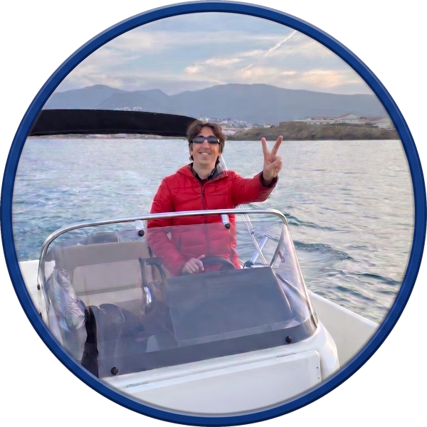

Soy Àlex, llevo más de 30 años viviendo en el Empordà y el mar siempre ha formado parte de quien soy.
Desde siempre he sentido una conexión especial con la Costa Brava, sus calas escondidas, sus acantilados y las aguas cristalinas que la hacen única. La pesca, la navegación y la naturaleza son mis grandes pasiones, y a lo largo de los años he tenido la suerte de conocer rincones que solo se pueden descubrir desde el mar.
Me gusta compartir esta pasión con las personas que me acompañan a bordo. Por eso organizo paseos en barca pensados para que podáis descubrir la Costa Brava de una manera auténtica, tranquila y cercana. Cada salida es diferente, pero todas tienen algo en común: el amor por este entorno privilegiado que considero mi casa. El objetivo es que mis pasajeros no sean simples turistas, sino invitados que descubren nuestra costa tal como la vivimos los locales. Quiero llevarte a sentir la energía de la tramontana esculpida en las rocas, a bañarte en las aguas cristalinas de Cala Prona, a maravillarte con el contraste geológico de Cap Ras o a relajarte con un buen aperitivo en la majestuosa Bahía de Garbet.
Disfruto enseñando los lugares más especiales de la costa y haciendo que cada experiencia sea segura, agradable y llena de buenos recuerdos. Si os gusta el mar tanto como a mí, estaré encantado de compartir con vosotros los secretos y la belleza de este rincón único del Mediterráneo.
A bordo de mi embarcación, tú marcas el ritmo. Diseñé estas rutas para ofrecer una experiencia exclusiva, íntima y totalmente flexible, donde la seguridad y la comodidad son absolutas. Me encanta compartir las historias, leyendas y anécdotas marineras de cada rincón que visitamos, pero también sé cuándo ceder el protagonismo al sonido del oleaje para que desconectes por completo. Para mí, no hay mayor satisfacción que ver la cara de sorpresa de quien sube a bordo y saber que, al volver a puerto, se lleva un trozo del corazón de la Costa Brava más auténtica y salvaje. ¡Te espero a bordo para compartir esta aventura juntos!